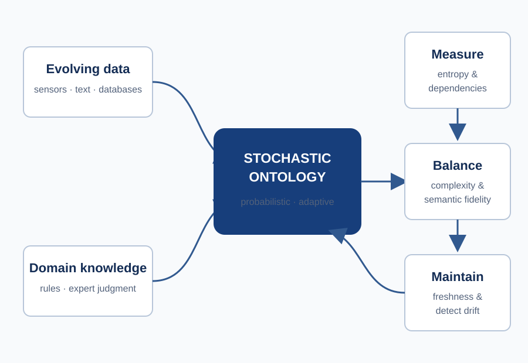

Toward a Stochastic Ontology
We are building knowledge representations that can express uncertainty, learn from new evidence, and revise themselves as the world changes.
Why this matters
Traditional ontologies are powerful because they make concepts and rules explicit, but they tend to describe a fixed world. Real environments are neither fixed nor fully observed. Sensor readings conflict, language is ambiguous, expert judgments vary, and relationships that were once reliable can become stale. Adding a probability to a rule captures a snapshot of uncertainty; it does not by itself explain how the knowledge structure should evolve as evidence and context change.
SOLIR’s goal is a stochastic ontology: a representation in which concepts, relationships, and axioms can carry uncertainty and change through time. It must retain the interpretability of rule-based knowledge while gaining the ability to learn, restructure, and refine its probabilistic parameters.
The general problem
The central challenge is not simply to attach confidence scores to an existing graph. The system must decide when uncertainty signals a missing concept, which dependencies are informative enough to preserve, and how to update without allowing the ontology to grow without bound or forget essential prior knowledge.
Information theory provides a disciplined way to make those decisions. Entropy can reveal where the ontology remains uncertain; conditional and mutual information can expose relationships between evidence and concepts. Rate–distortion reasoning can balance a compact, computationally manageable representation against the semantic loss introduced by merging or removing distinctions. Age-of-information can indicate when knowledge has become stale even if it was once accurate.
The proposal explores complementary language, generative-process, and graph views of the same evolving knowledge system. Together they support possible worlds, context-dependent updates, temporal transitions, structural analysis, and alignment between different ontologies.
What we aim to establish
- A rigorous representation for probabilistic concepts, relations, and rules that evolve with evidence.
- Update mechanisms that prioritize uncertainty and preserve informative dependencies.
- Principled control of the tradeoff between semantic fidelity and ontology complexity.
- Ways to detect drift and maintain fresh, task-relevant knowledge over time.
